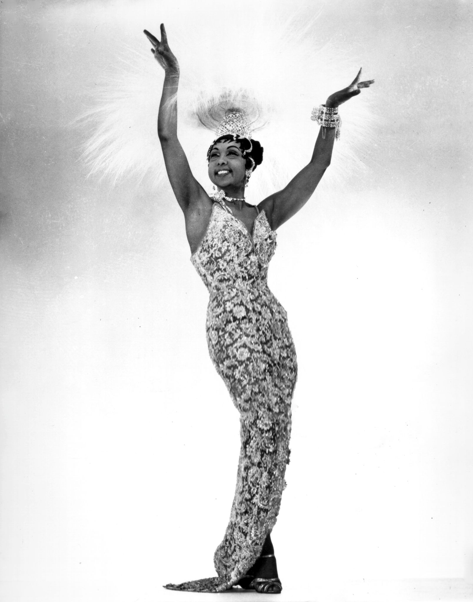
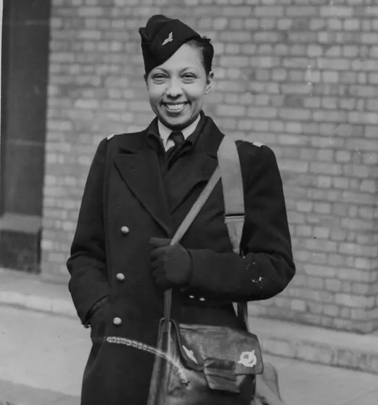

Media
1925; Josephine in an evening gown and diamond earrings

France 1926

Unknown Location 1970

Early 1930s; Josephine and her pet cheetah, Chiquita

Josephine Baker arriving at the Savoy Hotel in London, April 25th 1945
Josephine Baker arriving at the Savoy Hotel in London, April 25th 1945
Josephine Baker arriving at the Savoy Hotel in London, April 25th 1945
Josephine Baker arriving at the Savoy Hotel in London, April 25th 1945